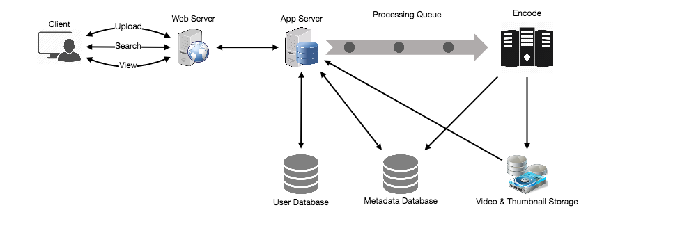
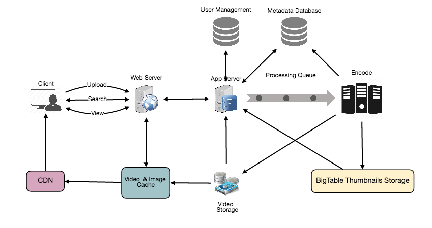
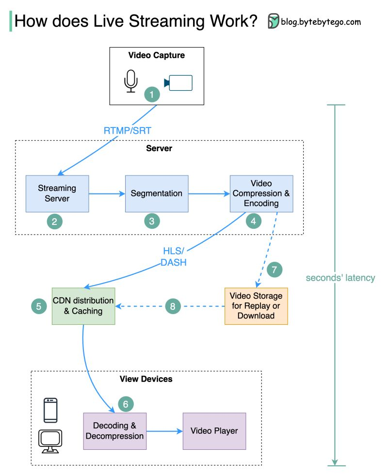
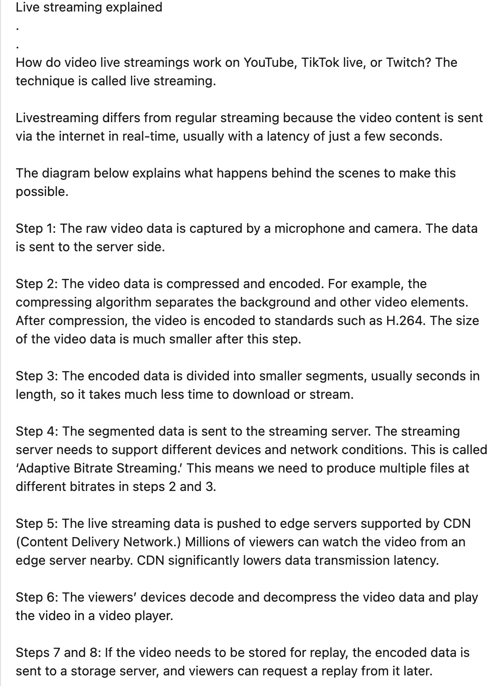

Designing YouTube or Netflix
Designing a video-sharing service like YouTube where users can upload, view, share, rate, and search videos at massive read-heavy scale.
Let's design a video sharing service like Youtube, where users will be able to upload/view/search videos.
Similar Services: netflix.com, vimeo.com, dailymotion.com, veoh.com
Difficulty Level: Medium
Youtube is one of the most popular video sharing websites in the world. Users of the service can upload, view, share, rate, and report videos as well as add comments on videos.
For the sake of this exercise, we plan to design a simpler version of Youtube with following requirements:
Functional Requirements:
- Users should be able to upload videos.
- Users should be able to share and view videos.
- Users can perform searches based on video titles.
- Our services should be able to record stats of videos, e.g., likes/dislikes, total number of views, etc.
- Users should be able to add and view comments on videos.
Non-Functional Requirements:
- The system should be highly reliable, any video uploaded should not be lost.
- The system should be highly available. Consistency can take a hit (in the interest of availability), if a user doesn’t see a video for a while, it should be fine.
- Users should have real time experience while watching videos and should not feel any lag.
Not in scope: Video recommendation, most popular videos, channels, and subscriptions, watch later, favorites, etc.
Let’s assume we have 1.5 billion total users, 800 million of whom are daily active users. If, on the average, a user views five videos per day, total video-views per second would be:
800M * 5 / 86400 sec => 46K videos/sec
Let’s assume our upload:view ratio is 1:200 i.e., for every video upload we have 200 video viewed, giving us 230 videos uploaded per second.
46K / 200 => 230 videos/sec
Storage Estimates: Let’s assume that every minute 500 hours worth of videos are uploaded to Youtube. If on average, one minute of video needs 50MB of storage (videos need to be stored in multiple formats), total storage needed for videos uploaded in a minute would be:
500 hours * 60 min * 50MB => 1500 GB/min (25 GB/sec)
These numbers are estimated, ignoring video compression and replication, which would change our estimates.
Bandwidth estimates: With 500 hours of video uploads per minute, assuming each video upload takes a bandwidth of 10MB/min, we would be getting 300GB of uploads every minute.
500 hours * 60 mins * 10MB => 300GB/min (5GB/sec)
Assuming an upload:view ratio of 1:200, we would need 1TB/s outgoing bandwidth.
We can have SOAP or REST APIs to expose the functionality of our service. Following could be the definitions of the APIs for uploading and searching videos:
uploadVideo(api_dev_key, video_title, vide_description, tags[], category_id, default_language,
recording_details, video_contents)Parameters:
api_dev_key (string): The API developer key of a registered account. This will be used to, among other things, throttle users based on their allocated quota.
video_title (string): Title of the video.
vide_description (string): Optional description of the video.
tags (string[]): Optional tags for the video.
category_id (string): Category of the video, e.g., Film, Song, People, etc.
default_language (string): For example English, Mandarin, Hindi, etc.
recording_details (string): Location where the video was recorded.
video_contents (stream): Video to be uploaded.
Returns: (string)
A successful upload will return HTTP 202 (request accepted), and once the video encoding is completed, the user is notified through email with a link to access the video. We can also expose a queryable API to let users know the current status of their uploaded video.
searchVideo(api_dev_key, search_query, user_location, maximum_videos_to_return, page_token)Parameters:
api_dev_key (string): The API developer key of a registered account of our service.
search_query (string): A string containing the search terms.
user_location (string): Optional location of the user performing the search.
maximum_videos_to_return (number): Maximum number of results returned in one request.
page_token (string): This token will specify a page in the result set that should be returned.
Returns: (JSON)
A JSON containing information about the list of video resources matching the search query. Each video resource will have a video title, a thumbnail, a video creation date and how many views it has.
At a high-level we would need following components:
- Processing Queue: Each uploaded video will be pushed to a processing queue, to be de-queued later for encoding, thumbnail generation, and storage.
- Encoder: To encode each uploaded video into multiple formats.
- Thumbnails generator: We need to have a few thumbnails for each video.
- Video and Thumbnail storage: We need to store video and thumbnail files in some distributed file storage.
- User Database: We would need some database to store user’s information, e.g., name, email, address, etc.
- Video metadata storage: Metadata database will store all the information about videos like title, file path in the system, uploading user, total views, likes, dislikes, etc. Also, it will be used to store all the video comments.

High level design of Youtube
Video metadata storage - MySql
Videos metadata can be stored in a SQL database. Following information should be stored with each video:
- VideoID
- Title
- Description
- Size
- Thumbnail
- Uploader/User
- Total number of likes
- Total number of dislikes
- Total number of views
For each video comment, we need to store following information:
- CommentID
- VideoID
- UserID
- Comment
- TimeOfCreation
User data storage - MySql
- UserID, Name, email, address, age, registration details etc.
The service would be read-heavy, so we will focus on building a system that can retrieve videos quickly. We can expect our read:write ratio as 200:1, which means for every video upload there are 200 video views.
Where would videos be stored? Videos can be stored in a distributed file storage system like HDFS or GlusterFS.
How should we efficiently manage read traffic? We should segregate our read traffic from write. Since we will be having multiple copies of each video, we can distribute our read traffic on different servers. For metadata, we can have master-slave configurations, where writes will go to master first and then replayed at all the slaves. Such configurations can cause some staleness in data, e.g. when a new video is added, its metadata would be inserted in the master first, and before it gets replayed at the slave, our slaves would not be able to see it and therefore will be returning stale results to the user. This staleness might be acceptable in our system, as it would be very short lived and the user will be able to see the new videos after a few milliseconds.
Where would thumbnails be stored? There will be a lot more thumbnails than videos. If we assume that every video will have five thumbnails, we need to have a very efficient storage system that can serve a huge read traffic. There will be two consideration before deciding which storage system will be used for thumbnails:
- Thumbnails are small files, say maximum 5KB each.
- Read traffic for thumbnails will be huge compared to videos. Users will be watching one video at a time, but they might be looking at a page that has 20 thumbnails of other videos.
Let’s evaluate storing all the thumbnails on disk. Given that we have a huge number of files; to read these files we have to perform a lot of seeks to different locations on the disk. This is quite inefficient and will result in higher latencies.
Bigtable can be a reasonable choice here, as it combines multiple files into one block to store on the disk and is very efficient in reading a small amount of data. Both of these are the two biggest requirements of our service. Keeping hot thumbnails in the cache will also help in improving the latencies, and given that thumbnails files are small in size, we can easily cache a large number of such files in memory.
Video Uploads: Since videos could be huge, if while uploading, the connection drops, we should support resuming from the same point.
Video Encoding: Newly uploaded videos are stored on the server, and a new task is added to the processing queue to encode the video into multiple formats. Once all the encoding is completed; uploader is notified, and video is made available for view/sharing.

Detailed component design of Youtube
Since we have a huge number of new videos every day and our read load is extremely high too, we need to distribute our data onto multiple machines so that we can perform read/write operations efficiently. We have many options to shard our data. Let’s go through different strategies of sharding this data one by one:
Sharding based on UserID: We can try storing all the data for a particular user on one server. While storing, we can pass the UserID to our hash function which will map the user to a database server where we will store all the metadata for that user’s videos. While querying for videos of a user, we can ask our hash function to find the server holding user’s data and then read it from there. To search videos by titles, we will have to query all servers, and each server will return a set of videos. A centralized server will then aggregate and rank these results before returning them to the user.
This approach has a couple of issues:
- What if a user becomes popular? There could be a lot of queries on the server holding that user, creating a performance bottleneck. This will affect the overall performance of our service.
- Over time, some users can end up storing a lot of videos compared to others. Maintaining a uniform distribution of growing user’s data is quite difficult.
To recover from these situations either we have to repartition/redistribute our data or used consistent hashing to balance the load between servers.
Sharding based on VideoID: Our hash function will map each VideoID to a random server where we will store that Video’s metadata. To find videos of a user we will query all servers, and each server will return a set of videos. A centralized server will aggregate and rank these results before returning them to the user. This approach solves our problem of popular users but shifts it to popular videos.
We can further improve our performance by introducing cache to store hot videos in front of the database servers.
With a huge number of users, uploading a massive amount of video data, our service will have to deal with widespread video duplication. Duplicate videos often differ in aspect ratios or encodings, can contain overlays or additional borders, or can be excerpts from a longer, original video. The proliferation of duplicate videos can have an impact on many levels:
- Data Storage: We could be wasting storage space by keeping multiple copies of the same video.
- Caching: Duplicate videos would result in degraded cache efficiency by taking up space that could be used for unique content.
- Network usage: Increasing the amount of data that must be sent over the network to in-network caching systems.
- Energy consumption: Higher storage, inefficient cache, and network usage will result in energy wastage.
For the end user, these inefficiencies will be realized in the form of duplicate search results, longer video startup times, and interrupted streaming.
For our service, deduplication makes most sense early, when a user is uploading a video; as compared to post-processing it to find duplicate videos later. Inline deduplication will save us a lot of resources that can be used to encode, transfer and store the duplicate copy of the video. As soon as any user starts uploading a video, our service can run video matching algorithms (e.g., Block Matching, Phase Correlation, etc.) to find duplications. If we already have a copy of the video being uploaded, we can either stop the upload and use the existing copy or use the newly uploaded video if it is of higher quality. If the newly uploaded video is a subpart of an existing video or vice versa, we can intelligently divide the video into smaller chunks, so that we only upload those parts that are missing.
We should use Consistent Hashing among our cache servers, which will also help in balancing the load between cache servers. Since we will be using a static hash-based scheme to map videos to hostnames, it can lead to uneven load on the logical replicas due to the different popularity for each video. For instance, if a video becomes popular, the logical replica corresponding to that video will experience more traffic than other servers. These uneven loads for logical replicas can then translate into uneven load distribution on corresponding physical servers. To resolve this issue, any busy server in one location can redirect a client to a less busy server in the same cache location. We can use dynamic HTTP redirections for this scenario.
However, the use of redirections also has its drawbacks. First, since our service tries to load balance locally, it leads to multiple redirections if the host that receives the redirection can’t serve the video. Also, each redirection requires a client to make an additional HTTP request; it also leads to higher delays before the video starts playing back. Moreover, inter-tier (or cross data-center) redirections lead a client to a distant cache location because the higher tier caches are only present at a small number of locations.
To serve globally distributed users, our service needs a massive-scale video delivery system. Our service should push its content closer to the user using a large number of geographically distributed video cache servers. We need to have a strategy that would maximize user performance and also evenly distributes the load on its cache servers.
We can introduce a cache for metadata servers to cache hot database rows. Using Memcache to cache the data and Application servers before hitting database can quickly check if the cache has the desired rows. Least Recently Used (LRU) can be a reasonable cache eviction policy for our system. Under this policy, we discard the least recently viewed row first.
How can we build more intelligent cache? If we go with 80-20 rule, i.e., 20% of daily read volume for videos is generating 80% of traffic, meaning that certain videos are so popular that the majority of people view them; It follows that we can try caching 20% of daily read volume of videos and metadata.
A CDN is a system of distributed servers that deliver web content to a user based on the geographic locations of the user, the origin of the web page and a content delivery server. Take a look at ‘CDN’ section in our Caching chapter.
Our service can move most popular videos to CDNs:
- CDNs replicate content in multiple places. There’s a better chance of videos being closer to the user and with fewer hops, videos will stream from a friendlier network.
- CDN machines make heavy use of caching and can mostly serve videos out of memory.
Less popular videos (1-20 views per day) that are not cached by CDNs can be served by our servers in various data centers.
We should use Consistent Hashing for distribution among database servers. Consistent hashing will not only help in replacing a dead server but also help in distributing load among servers.
Visual references

